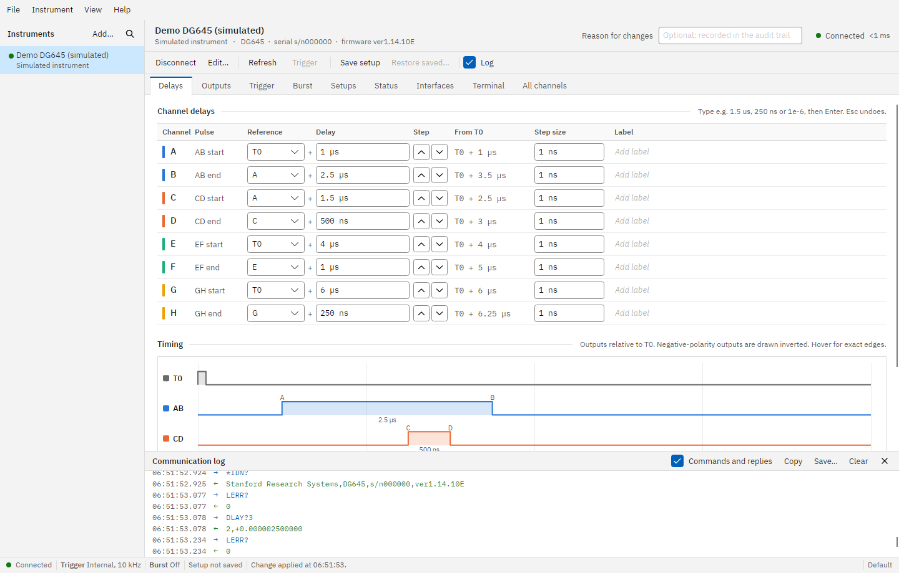
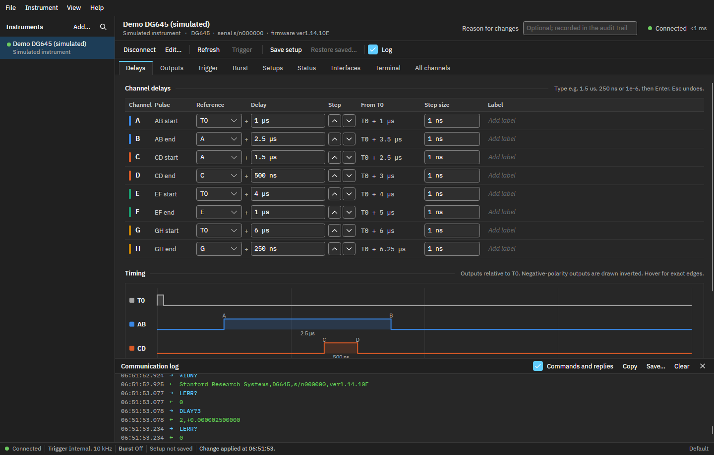
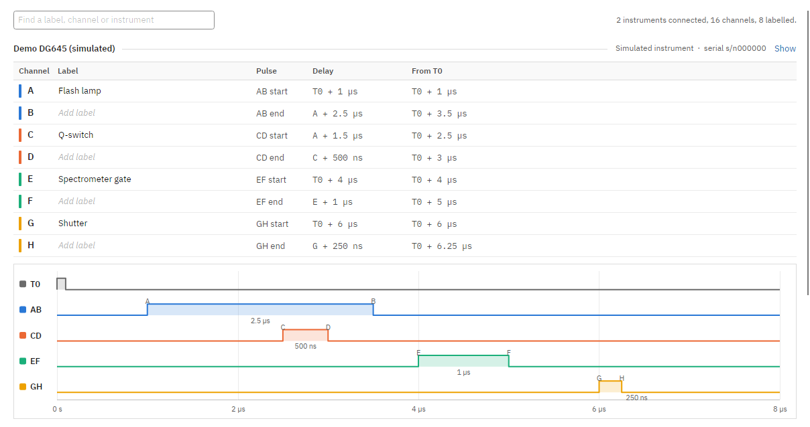
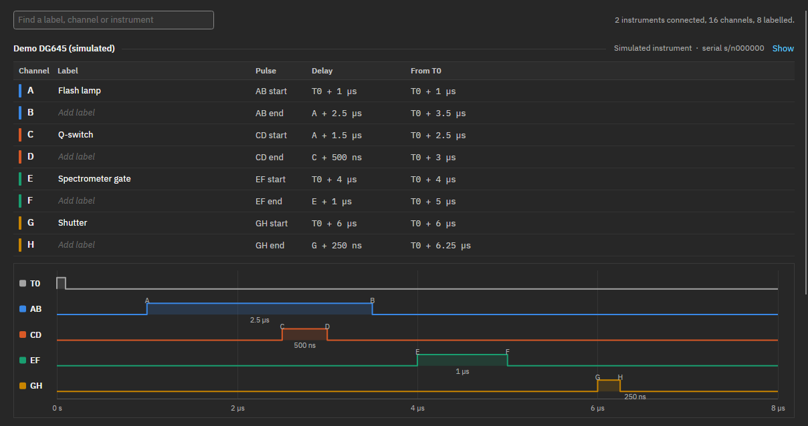

1
2
3
4
5
6
7
8
9
10
T0
A: T0 + 1 µs
B: A + 2.5 µs
AB output
A
B
2.5 µs wide
Time after T0
0
1 µs
2 µs
3 µs
4 µs
3.5 µs
Positive polarity
amplitude
offset + amplitude
offset
Rests at the offset and pulses up
by the amplitude.
TTL
0 V between pulses, pulses to 4 V
Negative polarity
amplitude
offset + amplitude
offset
Rests at offset + amplitude and pulses
down to the offset.
NIM
0 V between pulses, pulses to −0.8 V
the cycle has run: the button shows Arm again
Arm
Ready
press Arm (Ctrl+T)
edge at trigger input
Source: single shot,
external rising or falling
Waiting for the edge;
also shown in the status bar
One delay cycle:
each output fires once
Trigger
burst delay
burst period
T0
dashed: only when T0 output
is set to every cycle
AB
cycle 1
2
3
4
(cycles per burst: 4)
first group of 4
second group of 4
Delay cycle
1st
2nd
3rd
4th
5th
6th
7th
8th
AB
divide by 1
CD
divide by 4, phase 1
connection closed (cable, power, network)
Connected
answering every second
Not responding
clears when it answers
Connection lost
alert with Reconnect
no reply
answers again
3 in a row
Reconnect, or Connect again
Laser lab.tempo
configuration on this computer
Laser lab DG645
192.168.1.30 · Lab 2.14
saved setup
Beamline DG645
dg645-bl7 · Beamline 7
saved setup
Save setup (Ctrl+S)
Restore saved (Ctrl+R)
on connecting: compare
and ask if they differ
A = T0+1µs
DG645
the instrument
Instrument's value
1 µs
What the DG645 holds now.
type
Typing
2.5 us
Amber: not sent yet.
Esc puts 1 µs back.
Enter
Sent and read back
2.5 µs
Shows what the instrument
accepted, with any rounding.
if the instrument refuses it
3000 s
Rejected
Illegal delay (error 12)
Red, with the reason under it.
The instrument keeps 1 µs.
Each channel = its reference + its delay. From T0 (below each channel) adds up the chain.
T0
A
T0 + 1 µs
from T0: 1 µs
B
A + 2.5 µs
from T0: 3.5 µs
C
A + 1.5 µs
from T0: 2.5 µs
D
C + 500 ns
from T0: 3 µs
E
T0 + 4 µs
F
E + 1 µs
from T0: 5 µs
G
T0 + 6 µs
H
G + 250 ns
from T0: 6.25 µs
Change A's delay and
B, C and D move with it;
widths AB and CD stay.
Trigger source
Internal rate
External edge (threshold)
Single shot (Trigger / Arm)
Line (mains)
Advanced triggering
Holdoff: ignore triggers
closer together than this
Trigger prescaler: start a
cycle on every Nth trigger
Delay cycle
T0, then A–H
AB
÷N, phase
CD
÷N, phase
EF
÷N, phase
GH
÷N, phase
Output prescalers
INHIBIT input
rear panel, while high
blocks
triggers
or blocks outputs (AB; AB, CD; …)
The dashed parts act only when they are turned on: advanced triggering on the Trigger page, and Inhibit input not Off.
1 Open connection
TCP port 5025
2 Identify
reads its serial number
3 Read every setting
fills in every page
4 Heartbeat starts
checked every second
only if another serial number answers
A different unit at this address
Use new unit, or Cancel (stays disconnected)
Use new unit
if it has a
saved setup
5 Compare with saved setup
every setting, one by one
same
Nothing to do; the status bar says the setup matches.
differs
Depends on the instrument's Saved setup choice (F2)
Ask
(default): lists what differs; you pick
Load
the setup saved in Tempo, without asking
Keep
the instrument's settings: Setup not saved

